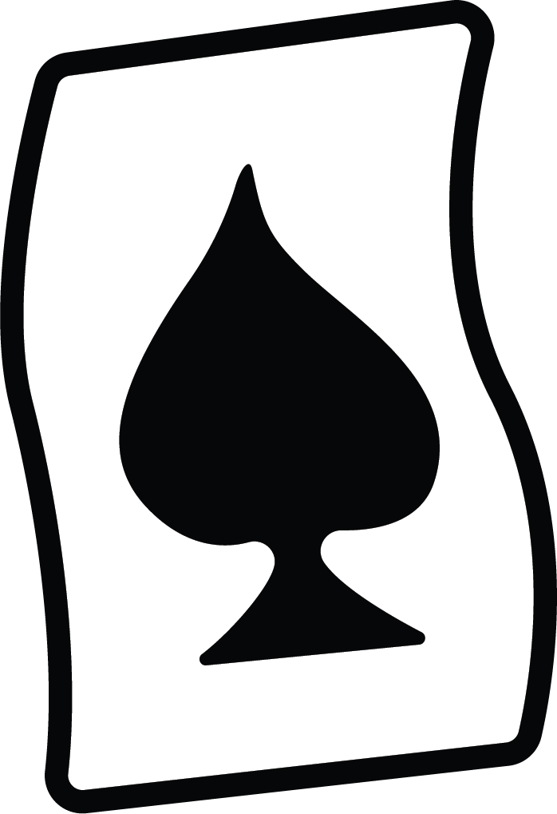
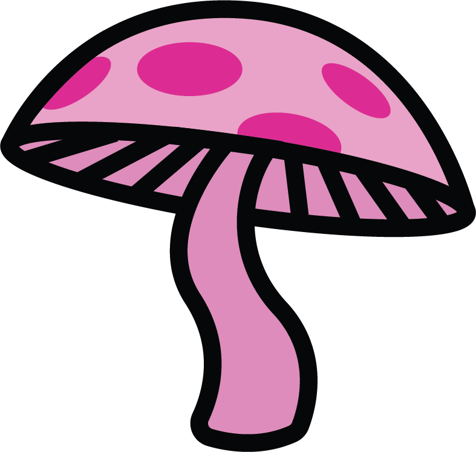
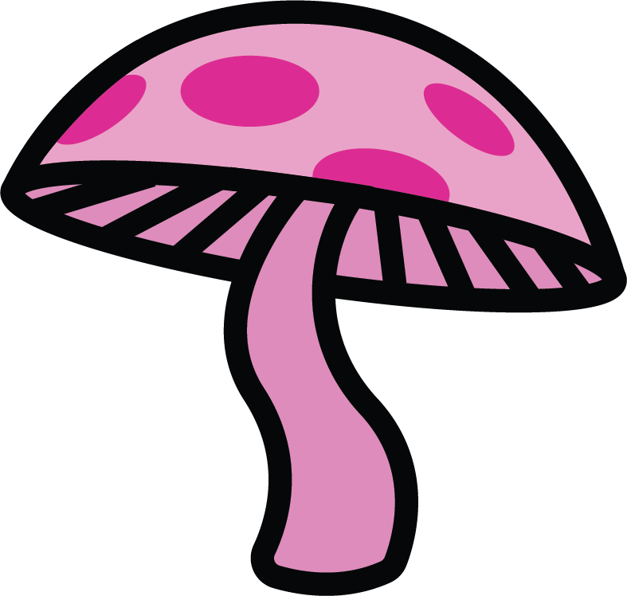
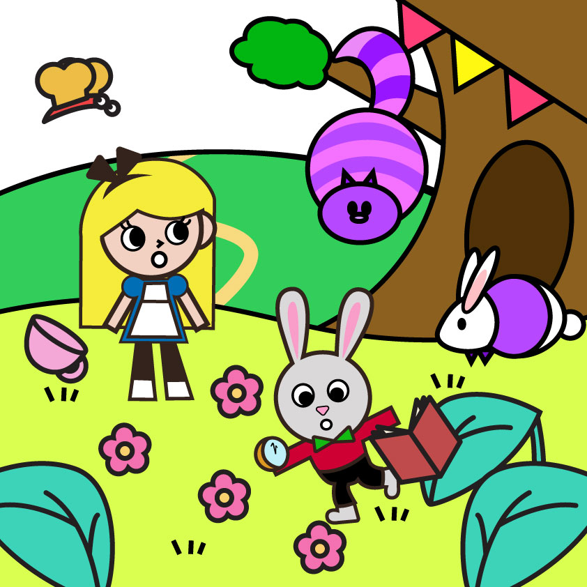

ALICE was beginning to get very tired of sitting by her sister on the bank, and of having nothing to do: once or twice she had peeped into the book her sister was reading, but it had no pictures or conversations in it, “and what is he use of a book,” thought Alice, “without pictures or conversations?” So she was considering in her own mind, (as well as she could, for the hot day made her feel very sleepy and stupid,) whether the pleasure of making a daisy-chain would be worth the trouble of getting up and picking the daisies, when suddenly a white rabbit with pink eyes ran close by her. There was nothing so very remarkable in that; nor did Alice think it so very much out of the way to hear the Rabbit say to itself, “Oh dear! Oh dear! I shall be too late!”(when she thought it over afterwards, it oc- curred to her that she ought to have wondered at this, but at the time it all seemed quite natural); but when the Rabbit actually took a watch out of its waistcoat-pocket, and looked at it, and then hurried on, Alice started to her feet, for it flashed across her mind
2
inventory
 


3
Alice in wonderland
-Chapter 1-